Release 0.71.0
What changed in Atlas 0.71.0
Atlas 0.71.0 follows more of what your code says, where it says it: a path looked up in a table the code writes out, a folder it lists or walks to any depth, a file or a connection it hands on, a file it opens through options, a path it builds step by step, a value a macro names. Python, Rust and TypeScript read each of these alike. A name the code binds once is one value wherever it stands, and a name bound to what operators compute of other names stands for those names, so a loop writes only the files it writes and a step takes the values it is handed. On the page, a step counts the step that set its object up earlier in the route, and a value a function makes itself is its own, not a value from beyond. And atlas-code serve reads your code once, opens on the picture the agent reads, and reads again only when a file a reader asked about changes. Four decisions, each derived from principle on its issue, are drawn beside the points they made.
A path looked up in a table, a file listed in a folder
A client that looks its paths up in a table it writes out (PATHS[env], paths.get(key) of a HashMap::from([..]), an object literal in TypeScript) asked an address the code does not say in TypeScript and Rust, and met no route. Now a key no code decides is one of the values the table holds, and a key the code writes picks its own, as Python already read it: the client meets the routes at the paths its table holds, in all three languages. A folder's listing is D/* everywhere (fs::read_dir, readdirSync, os.listdir), and a for loop or a closure run on each element takes one of the elements. In Python, os.path.join, + and pathlib's / are the same path to every rule that asks.


HTTP(shop) at the paths their tables holdA name bound once is one value, and a walk reaches every depth
A loop that uses its element twice in one path (root / kind / f"{kind}.csv" for each kind of ["books", "games"]) drew every pairing of the two uses: out/books/books.csv and out/games/games.csv, but also out/books/games.csv and out/games/books.csv, files no run writes. Now a name the code binds once is one value wherever it stands, so the route writes the two files it writes. Two lists the code keeps in step only by an index it counts (FOLDERS[i], NAMES[i]) are still two values, and Atlas still draws every pairing of them: the code does not say they belong together.
A function that lists a folder and calls itself on each folder it finds (copy_tree(entry, target / entry.name)) was followed one call at a time, down to a depth limit: a place for each level of data/*/*/…, and at the limit a folder of a {source} no call hands. Now the recursion is followed to where it ends, every folder at any depth below what the first call hands: the copy reads each file at any depth in data/ and writes at any depth in backup/, the same place a walk with rglob("*") reads. Both hold in Python, Rust and TypeScript.
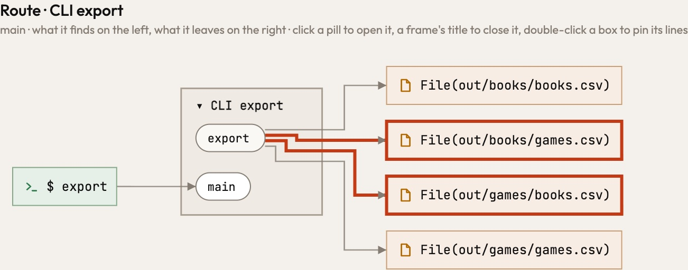
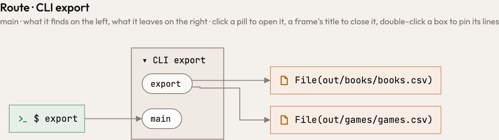
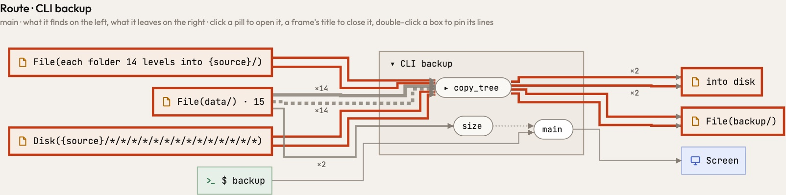
data/, a folder fourteen levels into a {source} no call hands, and an unnamed into disk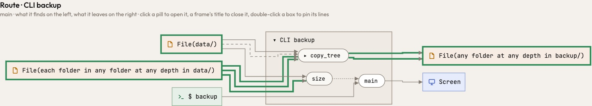
data/ and writes at any depth in backup/D/**, one place at every depth.A file or a connection keeps the place it was opened at
A Rust server that binds its address in main and hands each connection to a function drew the web it talks to as Web, with no address. A connection is a door to the place it was opened at, and keeps that place wherever it is handed, as a path does: the greeter's answer and linger reach Web(127.0.0.1:7878), and a client that connects there reaches the same box, so the two ends of a connection meet. Python's sockets move data by the same operations as Rust's.
A file is a door too. A function handed an open file (count(f), emit(out, n)) read and wrote nothing, so atlas-code check asked of emit why it does nothing, and a Node client that connected with net.createConnection(7878, "127.0.0.1") reached no network at all. Now every operation through a door (a read, a write, a sendall, a listener for "data") is a line of its own to the place the door was opened at, whether the function opened the door or was handed it, in Python, Rust and TypeScript. An address is host:port however the code writes it: ("127.0.0.1", 7878), SocketAddr::from(([127, 0, 0, 1], 7878)), or a port and a host handed apart. The overview still draws one line per place on each side of a step; opening the step shows each operation in the order it runs.

Web
Web(127.0.0.1:7878), where its client arrives too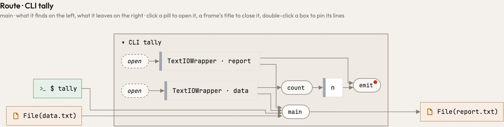
count and emit touch no file, and emit is asked why it does nothing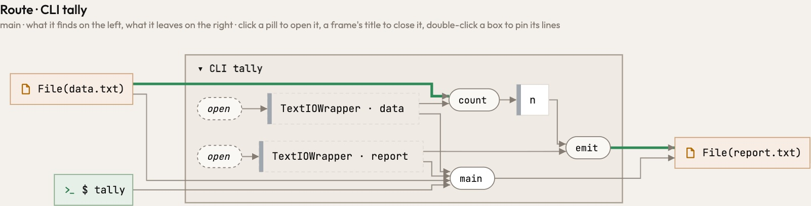
count reads File(data.txt) and emit writes File(report.txt), the files main opened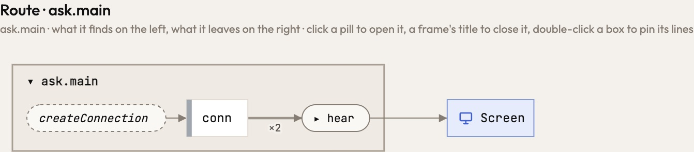
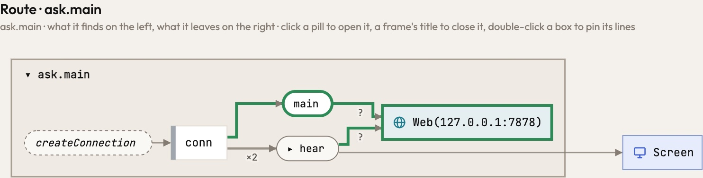
main and hear reach Web(127.0.0.1:7878)A file is where its open says
OpenOptions::new().append(true).open(folder.join("shelf.log")) was read as a call to create, the option, so the file was the literal shelf.log, wherever the folder was. Now the options say how the file opens and the file is the path open is handed, followed through the callers: the log rests beside the data files, as Python's open(.., "a") and TypeScript's appendFileSync put it. What the graph calls a file (atlas-code analyze, the MCP) is now its place, however the code spells it. File::options() opens a file as OpenOptions::new() does.


File(~/data/shelf.log), beside the data it countsA path is named by what names it, and so is a folder
An input whose default is the empty path names nothing but itself. A program that writes its report to process.env.REPORT ?? "" and its log to process.env.LOG ?? "" drew both written into one unnamed place, its two steps folded into one; now each writes the file its variable names, Disk({$REPORT}) and Disk({$LOG}), and so do os.environ.get("REPORT", "") and env::var("REPORT").unwrap_or_default(). A file whose path names no place no longer takes a literal of its call for a name: open(os.environ["CARD"]) reads Disk({$CARD}), not a file called CARD.
A folder is placed as the files in it are. Removing Workbench::of(project).file("report.txt").parent() removes {project}/.made/, the folder the report is written into, where it was drawn removing File(report.txt), a literal of the call; Python's shutil.rmtree of a .parent and TypeScript's rmSync(dirname(...)) read the same. The step up .. names no folder of its own: {root}/.. rests where {root} does. Whether a path starts at a literal of your code is read from the same table of path functions each reader evaluates paths with; nothing a picture shows moves by it.
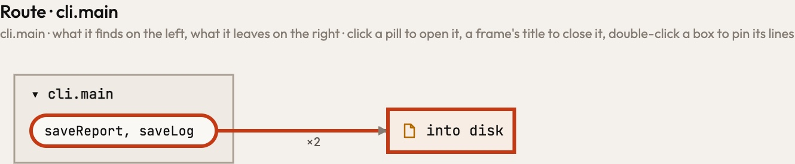
saveReport and saveLog fold into one step that writes into an unnamed place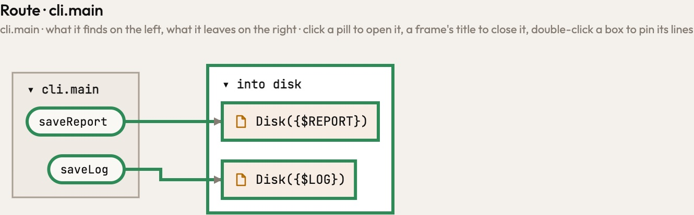
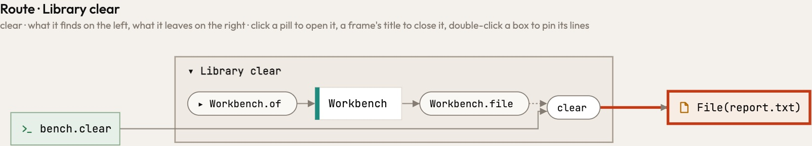
clear removes File(report.txt), a literal of the call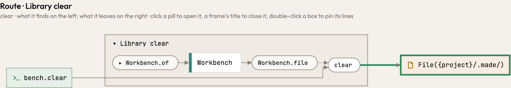
{project}/.made/, the folder the report is written intoForms that say the same thing are read alike
In Rust, a PathBuf built with push, set_extension or pop was a value Atlas did not follow, so the recipe a shelf reads was drawn as File(shelf), the folder it started from. A change in place is now the path bound anew (p.push(x) is p = p.join(x), p.pop() is p = p.parent()), as a joined path is in Python and TypeScript: the recipe is File(shelf/recipes/bread.md), and p.read_dir() lists the folder and each entry in it, as fs::read_dir(p) does. A value bound through * is the value it is written on, a constant named inside vec![..] or matches!(..) is a use of the constant, and tokio::fs and async_std::fs are disk as std::fs is.
In TypeScript, a listing with { withFileTypes: true } gives entries whose name is the name below the folder, so join(DATA, e.name, "meta.json") is data/*/meta.json; for (const k in KINDS) goes over the keys the table writes, each a file of its own; and process.env[STORE] with STORE = "STORE" is the variable STORE. In Python, a database opened on a file is named by that file however its path is built: sqlite3.connect(os.path.join("data", kind, "counts.db")) was named data, and a function that opened counts.db and totals.db was read as opening one. Now they are data/{kind}/counts.db and data/totals.db, in Python as in Rust.
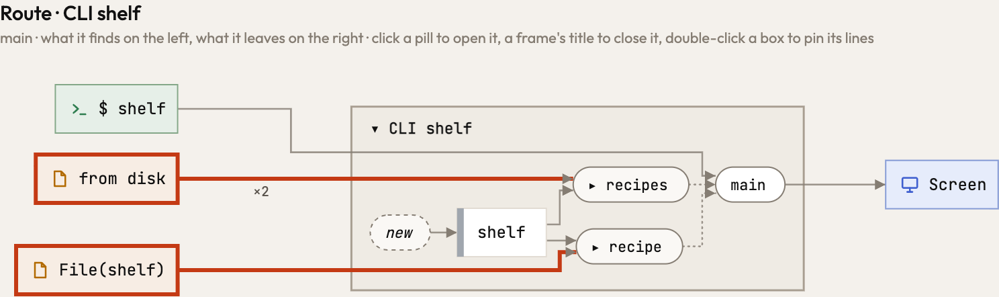
File(shelf), and the listing of recipes two reads from disk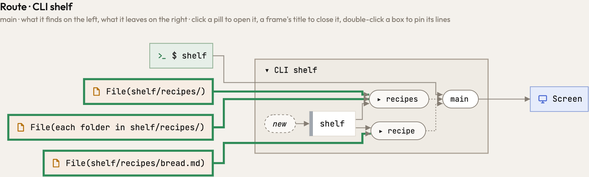
File(shelf/recipes/bread.md), the folder recipes and each entry in itA value a macro names is built
Outside a macro, Plain.show(&heading) builds a Plain and runs show on it. Inside one, println!("{}", Plain.name()) ran Plain.name on a Plain no step made. Now the two forms read alike: a Plain() step builds the value, and name runs on it.

Plain.name runs on a value no step makes
Plain() makes it firstA step counts what ran before it
A shelf is handed its folder when it is built, and each of its methods writes its own file there. When main set the shelf up in a step of its own, the page counted only callers above a step, not the step beside it, so both methods drew the path as it was read, Disk(write.path), and folded into one box. Now a caller that set the object up counts wherever it ran earlier in the route, and each method writes its own file. Who makes a path whole is also written in its shortest form: an alternative that contains another says nothing more.

Disk(write.path) twice
A function's own values are its own
A name a function binds to an expression, loud = samples.abs() > 0, was taken for a module's name, so the step that called it drew a value from beyond beside the samples it is made of. Now a local is the body's own value in every language, and only what a function really reads from outside comes from beyond. A step drawn closed beyond the cut names its values from beyond as its opened picture does, so opening it keeps every line.

Tensor · loud → _loud beside Tensor · samples
Tensor → _loud
Tensor · PAD, opened only Tensor
A name computed of names stands for them
A name bound to what operators compute of names, with no call in it (let gap = first.db - QUIET.db, let both = [first, &QUIET], const both: Level[] = [first, QUIET]), was read two ways. Python followed it to the names it is made of. Rust and TypeScript kept it as a value of the body's own: a step handed gap took nothing, a step handed both took Level · both in place of the two levels, and the module's quiet level reached neither step. An operator is no step, and naming its result adds no arrow, so now, in all three languages, a step handed such a name is handed what the expression written in its place hands: draw(gap) takes first and QUIET, as draw(first.db - QUIET.db) does, and a vec![..] of names is the values it holds. The name is still the body's own. A choice (a if c else b, x ?? y) and a value a call makes (samples.abs() > 0) are read as before.
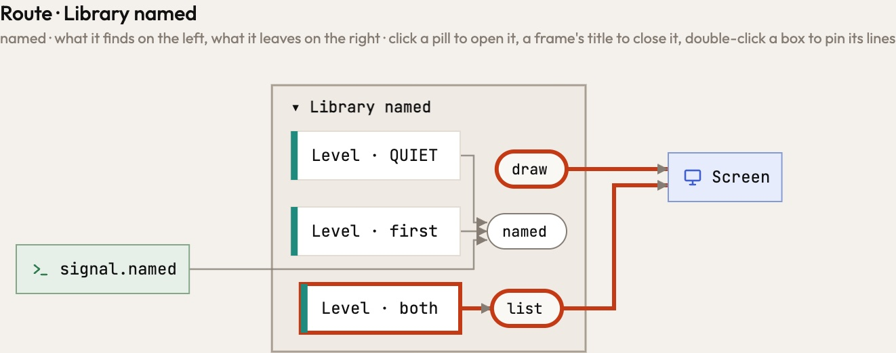
draw takes nothing and list takes Level · both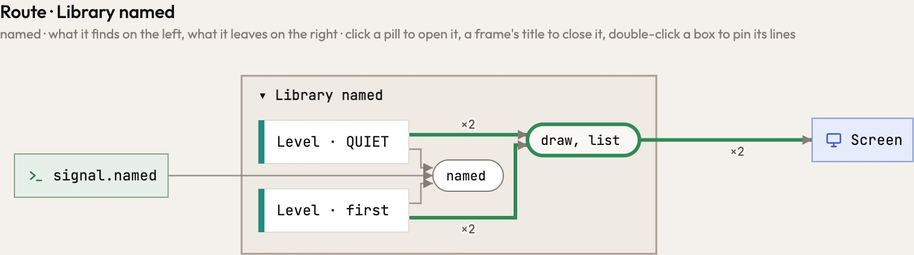
Level · first and Level · QUIET reach draw and list, as written in placeAtlas's own paths, written the standard way
Atlas wrote its own paths with a loop over a path's parts, which Atlas does not evaluate: a program's own loop is code, not a path. So in Atlas's own picture every file its repository reads was {normal.out}. It now writes them with path-clean, the standard library for taking . and .. out of a path, and the files a repository reads are {dir}/{key}, below the directory each caller names. Your programs gain the same reading: a path a library makes absolute (std::path::absolute) or cleans (path_clean::clean) is the place it was handed, so a note saved in ./data/../notes and read from notes/note.txt is one file between save and show. A loop of your own over the path's parts still stands as what Atlas does not evaluate. Atlas Studio finds atlas-code, claude and codex on the PATH with the which crate, and runs uv as the PATH finds it, or ATLAS_UV where it is set.
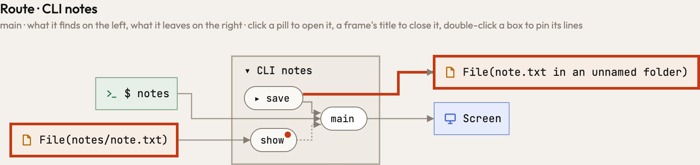
save writes the note into an unnamed folder, and show reads another file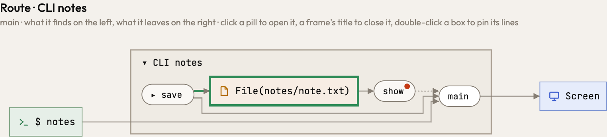
save and show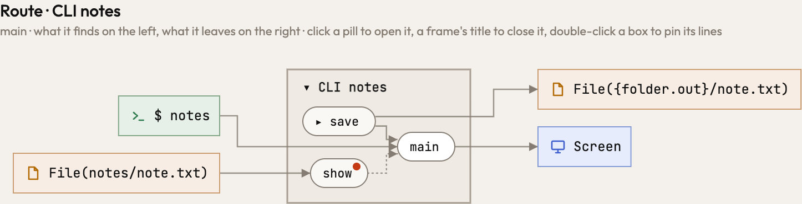
{folder.out}One reading, one picture for both sides
atlas-code serve, and Atlas Studio with it, read a program twice on a cold start: once without its libraries for a first picture, then again with them. That first picture was no coarser view of the complete one. Its routes ended at a library's border, where the complete picture follows the library to the place it reaches, so no zoom or filter leads from one to the other, and the agent beside you read the complete one. Now serve reads once, and the page opens on the picture the agent reads; after a change it keeps that picture until the next one is drawn. A part's reading is kept with what its reader asked of the repository, so a file no reader asks about (a picture, a note, a log) no longer makes Atlas read again or the page redraw.